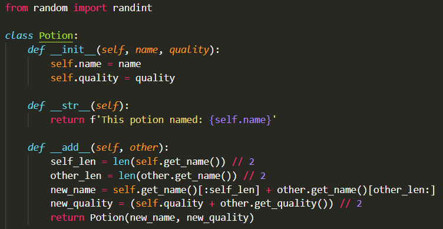
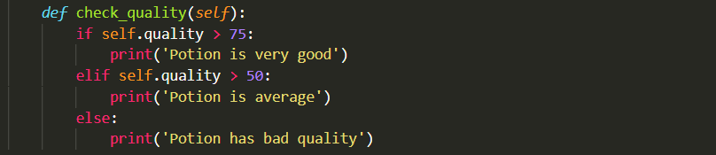
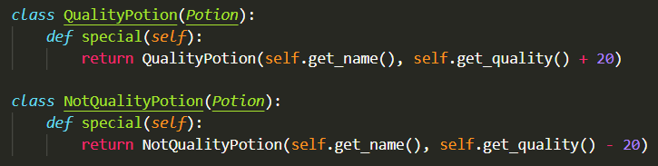
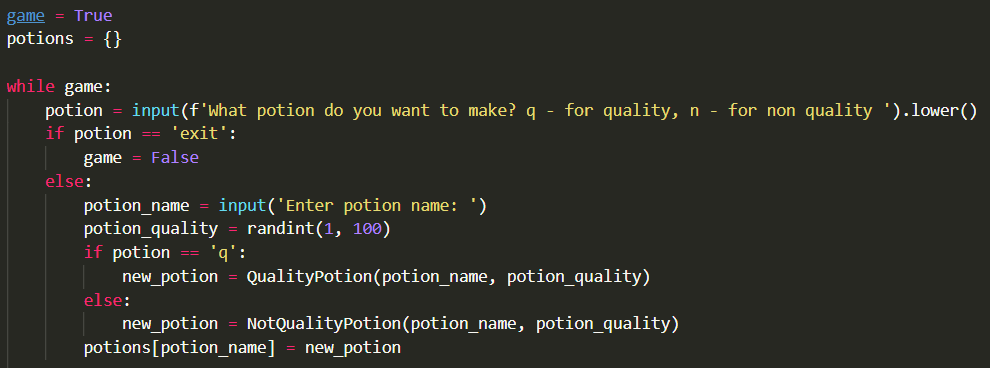
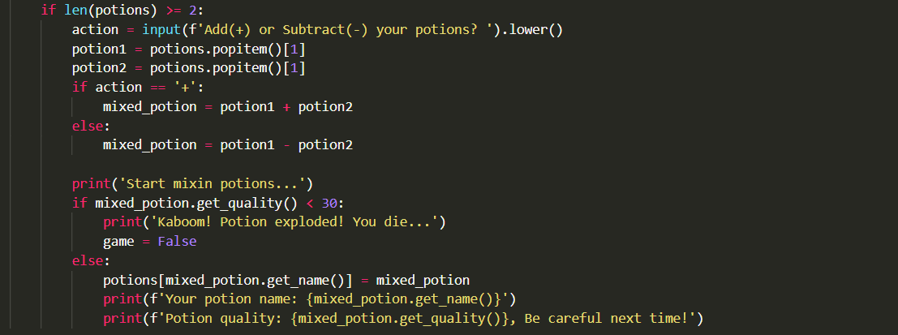

1
Зельеварение
сложно
Используя классы, создай игру: игрок варит зелья и смешивает их. Сложение зелий (+) и вычитание (-) сделай через магические методы __add__ и __sub__.
Показать ответ (сначала попробуй сам!)




